E! News got a full rebrand across desktop, mobile web, and a brand-new iOS app. Same
editorial voice, three surfaces tuned to how people actually consumed pop culture in 2018.
The app shipped Emmy-nominated.
RoleDigital Product Designer
CompanyNBCUniversal · E!
PlatformWeb · iOS · Android
Status● Shipped · 2018 · Emmy nom
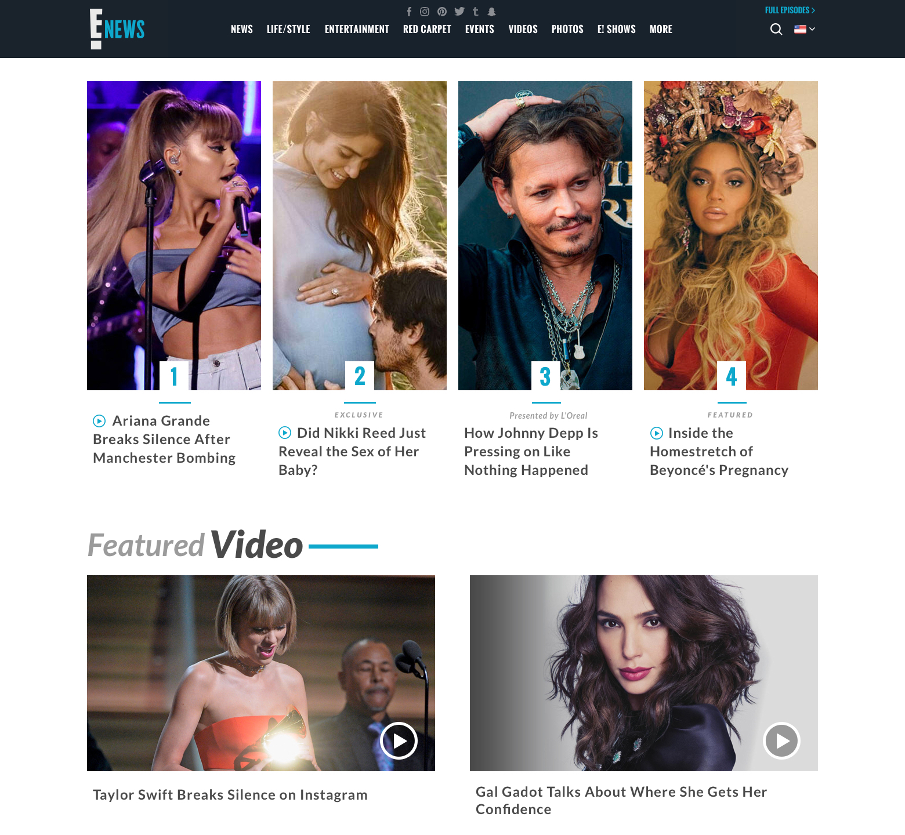
01 · The product
One brand, three surfaces.
E! News covered red carpet, celebrity, and breaking pop culture for an audience that
checked in many times a day. The rebrand spanned eonline.com (desktop and responsive
mobile web) and a new iOS app, with the goal of keeping the editorial pace high while
pulling everything onto a unified visual system.
The app was the bigger lift. We built it widget-first: a library of front-door modules
that editors could compose into the home feed each day, with each widget designed for a
specific kind of content (top stories, breaking news, video features, photo galleries,
live red carpet coverage).
02 · Web rebrand
Desktop and mobile web, same system.
A responsive rebrand of eonline.com. The visual system, type scale, and content modules
worked from desktop down to mobile without being re-thought per breakpoint. Editorial
pace was the constraint: the site had to handle 100+ stories a day without feeling like
a wall of cards.
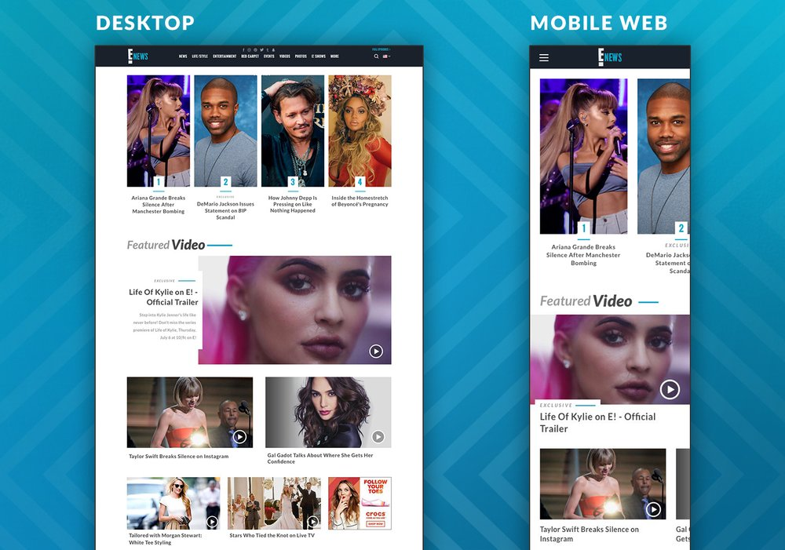
01 · Home feed
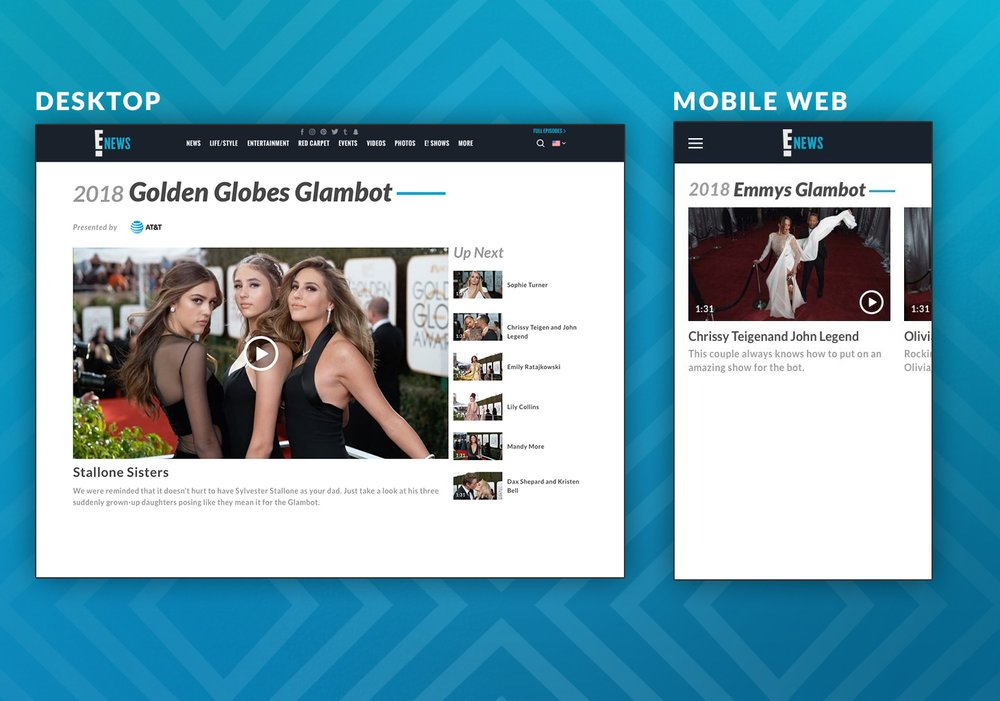
02 · Category page
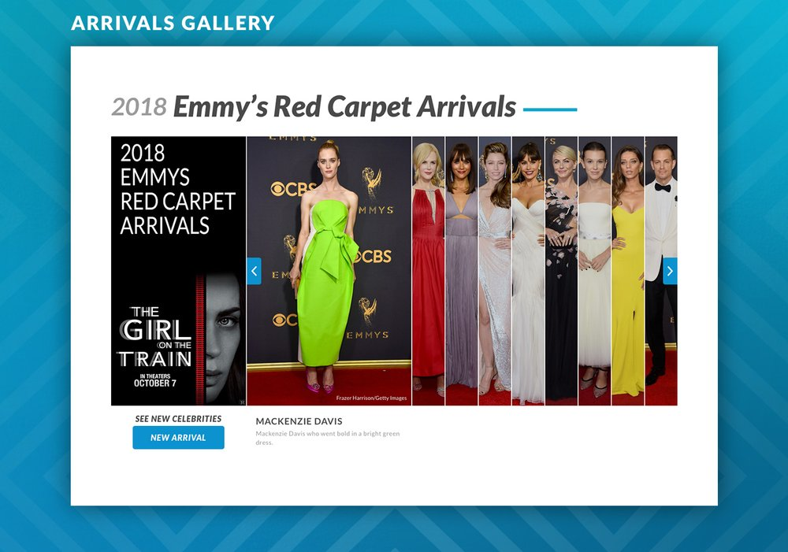
03 · Article detail
03 · iOS · Front door
Front door built from widgets.
The home feed was assembled, not designed. I drew up a library of front-door widgets,
each tuned for a specific kind of editorial moment, and editors arranged them in order
for the day's mix. New content shapes (a Live 360 red carpet, a featured video, a fresh
breaking story) had a widget waiting for them.
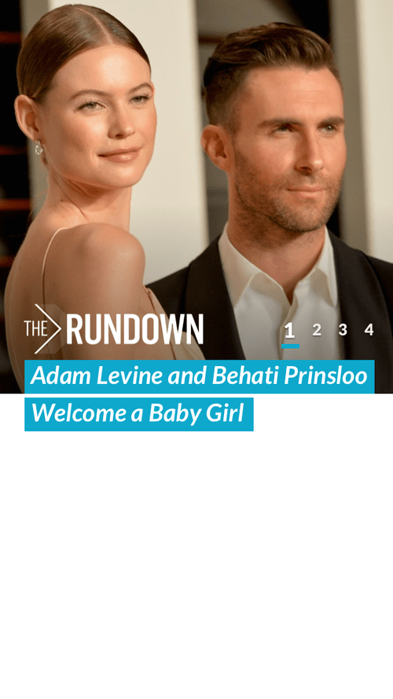
Top 4
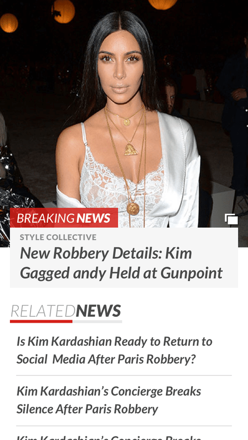
Breaking news
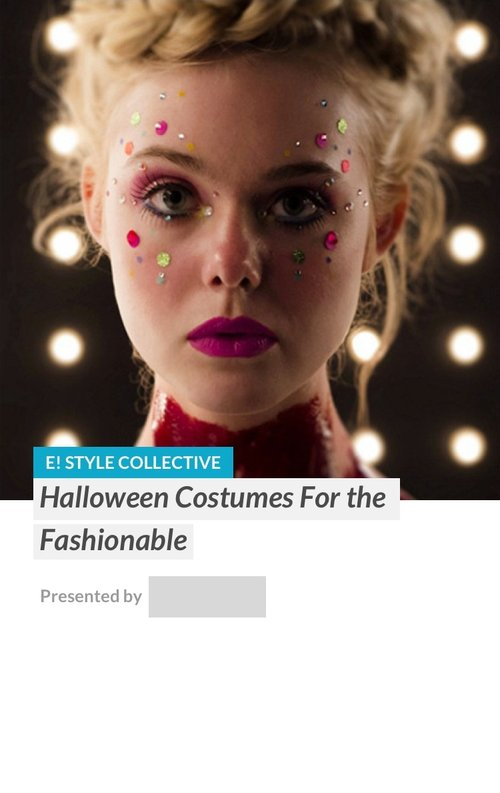
Large teaser
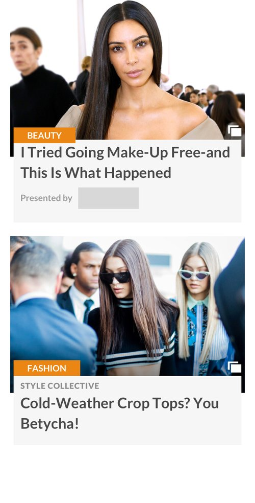
Double teaser
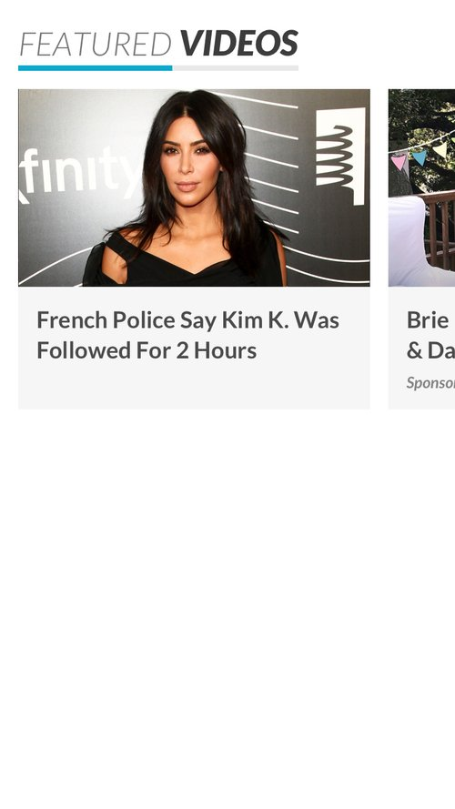
Featured video
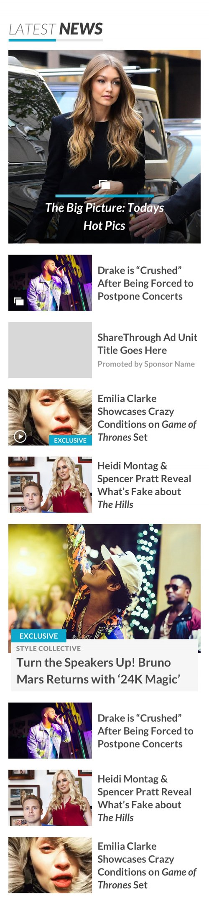
Content grid
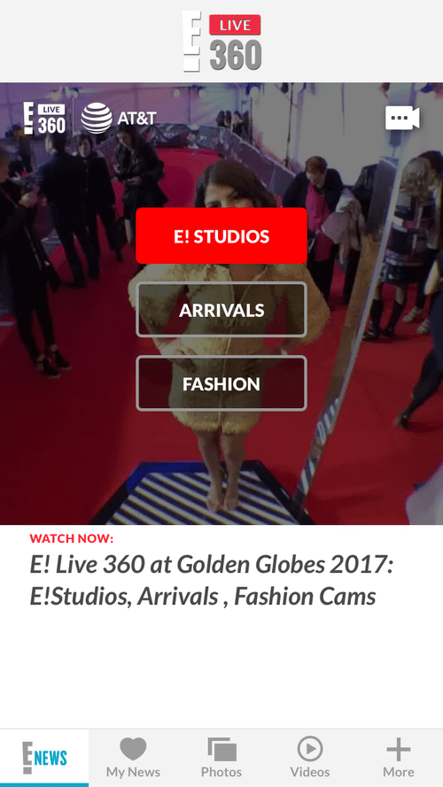
E! Live 360
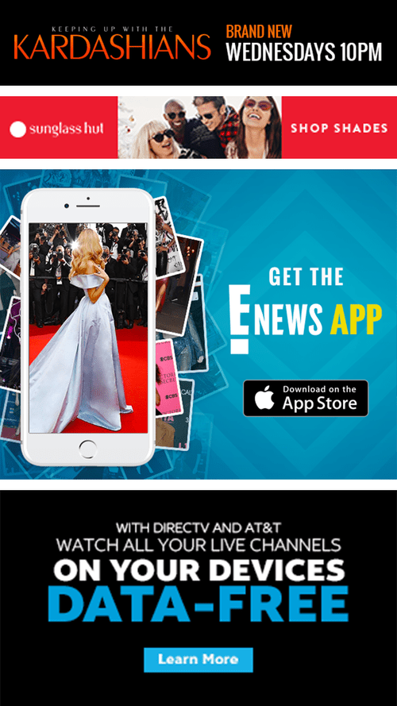
Ad banners
Composable, not fixed
Treating the front door as a library of widgets meant the home feed could change
shape every day without engineering pulling new layouts. The same handful of widgets
covered breaking news, the slow-news days, red carpet weekends, and award seasons.
04 · iOS · Sections
Beyond the front door.
Past the home feed, the app split into focused sections. My News let users pick the
topics and shows they cared about, with the feed re-sorting around their picks. Photo
galleries handled article-attached photo sets with their own reading flow. Article
detail had its own swipe and share patterns, all designed to keep editorial pace high
without fighting the iOS gestures users already knew.
My News + other sections
My News opens with a category picker on first use, then surfaces stories from those
topics first on subsequent visits. Shows and More are sibling sections with their own
content shape.
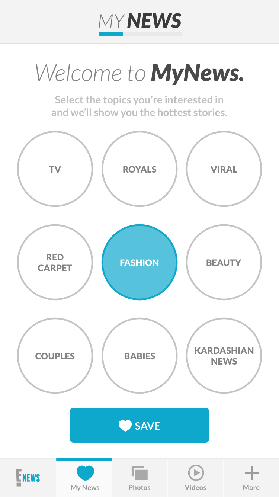
My News · FUE
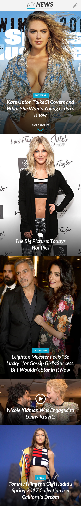
My News · feed
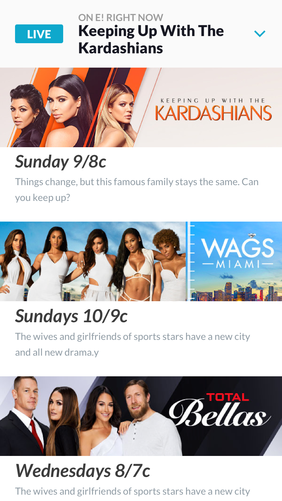
Shows
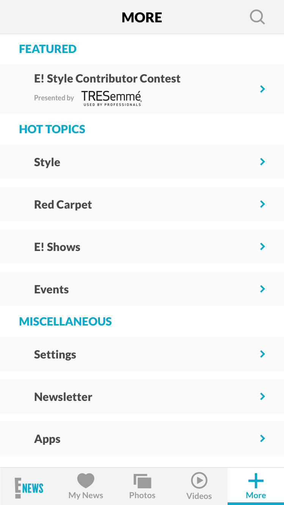
More
Photo galleries · in-app reading flow
The app had its own gallery flow for the deeper article-attached photo sets. The
Arrivals Gallery on the web was a sibling to this, tuned for live red carpet rather
than archived editorial.
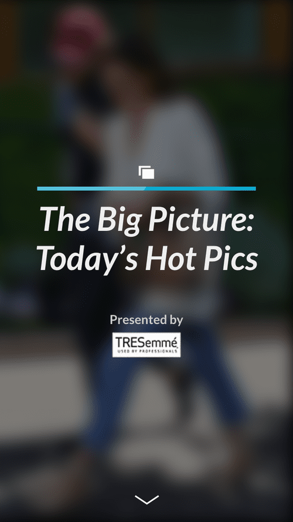
01 · Entry
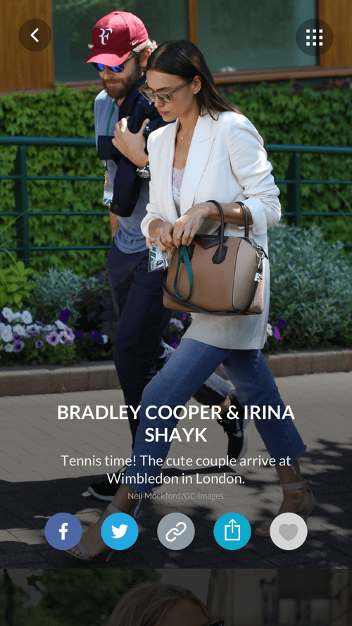
02 · Scrolling
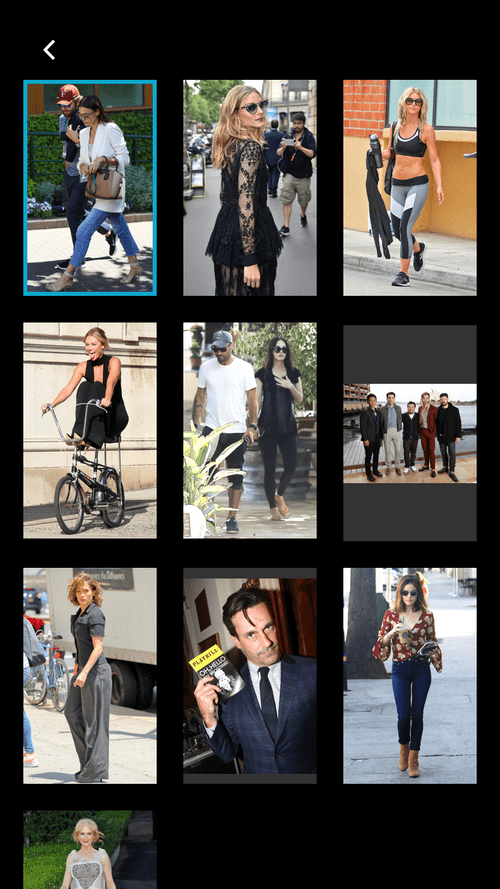
03 · Selection
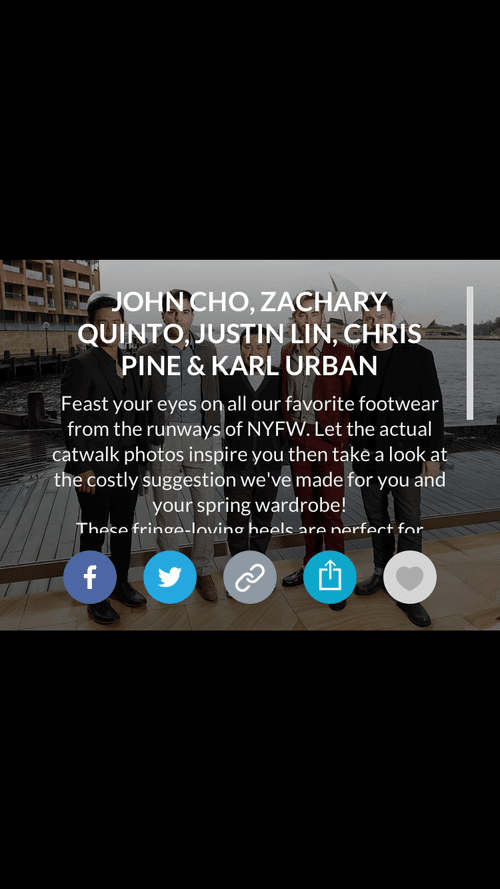
04 · Detail view
Gallery interaction · in motion
Article detail · the deeper read
Each article had its own detail view: swipe between articles, content-aware layout for
photos and pull quotes, and a sharing pattern designed to feel native rather than
bolted on.
Article swiping
Sharing options
Article scroll through
For reference, the full article detail page and the full front door home feed both
have long-scroll views. Click either to expand.
Article detail · full view
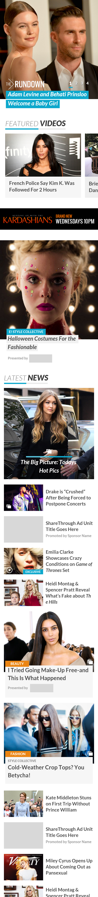
Front door · full home feed
05 · Animated interactions
Built in motion, not just in pixels.
Every interaction was prototyped end-to-end before engineering touched it. The
prototype was the spec. These four captures cover the splash, the front-door scroll,
and two My News reading patterns.
Splash screen
Front door
My News · article scrolling
My News · article select
Next case study
NBCU · 2018 · Emmy nom
E! Live 360. Red carpet, in real time.
The Arrivals Gallery: a live red carpet photo gallery prototype that shipped on
eonline.com in 2018 and is still running today.